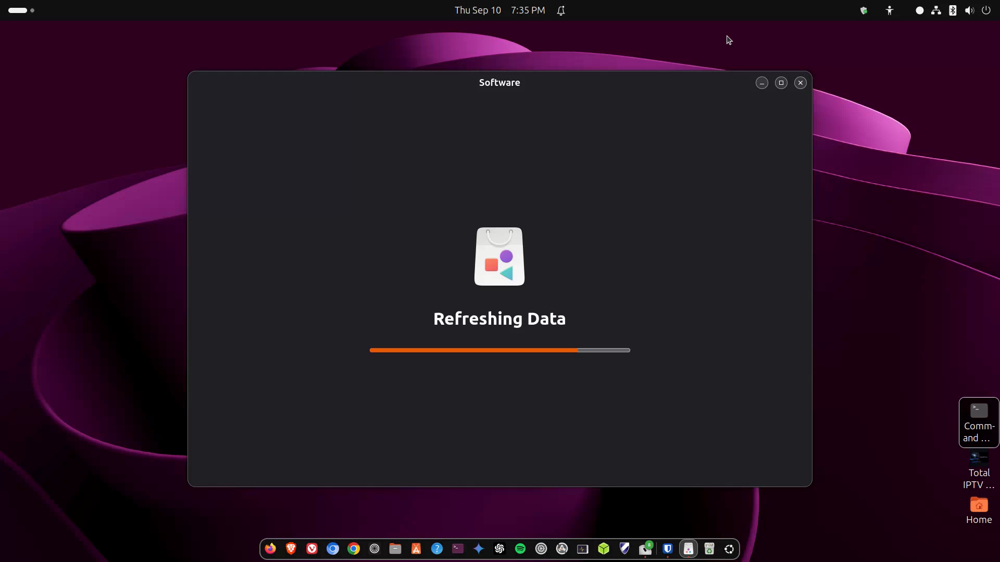

Installing apps
App Center / Software, and a gentle intro to Flatpak and Flathub.

media/images/04-install-apps.png with a GTR capture when ready.
Steps
- Open App Center (Ubuntu 24.04+) or Ubuntu Software. Search for an app (try “VLC” or “GIMP”).
- Read the listing. Prefer apps marked as open source / from Ubuntu or Flathub when you have a choice.
- Click Install. Enter your password if asked. Wait for the progress bar, then launch from Activities.
- Optional: enable Flathub for more apps — see Lesson 13. Many beginners can stay with App Center first.
Three common ways apps arrive
- App Center / deb or Snap: built into Ubuntu’s store UI.
- Flatpak (Flathub): sandboxed apps, great selection — Lesson 13.
- apt in the terminal: classic Ubuntu packages — Lesson 5 and 8.
Tip Prefer the store over random websites. If a site only offers a Windows
.exe, look for a Linux / Flatpak / Snap / .deb version or an alternative app.